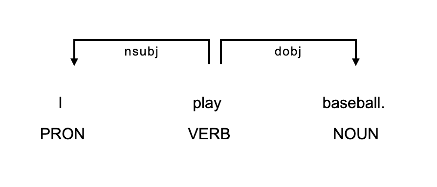

Linguistic Data Analysis II · Day 2
Session 4: Annotation Principles & Inter-Annotator Agreement
Day 2 · Annotation, Gold Standards & Metrics (2-1)
Masaki EGUCHI, Ph.D.
Tohoku University · Summer 2026
Session 4: Annotation Principles & Inter-Annotator Agreement
📋 Agenda
- A · What NLP tasks are there — the task taxonomy, now concrete in linguistics
- B · How NLP is evaluated — the workflow, and how it transfers to LLMs
- C · The annotation-&-evaluation workflow — what you’ll run hands-on in S5–S6
🎯 Learning Objectives
By the end of this session, you will be able to:
- Place a linguistic annotation task in the classic NLP taxonomy (identify · extract · categorize, by unit of analysis).
- Describe the NLP evaluation workflow (gold → predictions → metrics) and how it transfers from a trained model to a prompted LLM.
- Operationalize a linguistic category into an annotation scheme with coding guidelines.
- Explain inter-annotator agreement: percent agreement vs. why Cohen’s κ corrects for chance — including quadratic weighted κ for ordered labels.
- Read a confusion matrix and compute P / R / F1 from its four cells (TP · TN · FP · FN).
Note
The message of the day: labelled data is only trustworthy if the category is operationalized and two coders agree beyond chance.
A · What NLP tasks are there
What is annotation?
Annotation = adding interpretive labels to the available linguistic data.
- POS — noun / verb / adjective…
- Word sense — which meaning of bank?
- Stance / engagement — is the writer hedging, endorsing?
- Discourse moves — what is this sentence doing in the argument?
- Error tags, CEFR level, …
Annotation
Annotation: Putting labels on a specific unit of analysis
Label:
- The actual value (often category) we put as a result of the annotation
Unit of analysis:
- The chunk/layer that the specific annotation will be put on.
- Morphology
- Word
- Multiword Units
- Sentence
- Paragraph …
- The chunk/layer that the specific annotation will be put on.
Part of Speech
POS tagging = label every token with its grammatical category (NOUN, VERB, ADJ…). One label per token — the simplest sequence-labelling task.
The_DET dogs_NOUN ran_VERB quickly_ADV ._PUNCT
- Penn Tag
Word Sense Disambiguation
Word-sense disambiguation = decide which meaning a word carries in context. Same form, different sense.
- She sat on the bank of the river. → riverbank
- She deposited the cheque at the bank. → financial institution
The token is identical — only context resolves the sense. Harder than POS: the label set is per word, not a fixed grammar.
Syntactic Dependency
Dependency parsing = link each token to its head, building a tree; the top is the ROOT. Still token-level, but the label is a relation between tokens.

Dependency tree for I play baseball — I →nsubj→ play (ROOT), baseball →dobj→ play
Stance
Stance annotation = label how a writer positions themselves toward a proposition — hedging vs. endorsing.
Unit of analysis is a span .

Discourse Moves
Move analysis = label what a stretch of text does rhetorically. Classic CARS model for research-article introductions (Swales):
| Move | Function |
|---|---|
| Move 1 | Establishing a research territory |
| Move 2 | Establishing a niche |
| Move 3 | Presenting the present work |
Kim & Lu (2024) had GPT annotate these moves — near-perfect when fine-tuned, though steps stayed hard. Unit: sentence/clause → one label.
Organize by unit + output
- Token-level sequence labelling — POS, NER (one label per token).
- Span categorization — stance spans (label a stretch of text).
- Unit categorization → one label per unit — a sentence or a whole text.
The scope of the current course
We will focus mostly on sentence categorization and text categorization:
- The evaluation code is easy to build
- the canonical
{id, text, label}schema you met in S3 is sufficient. - Span / sequence tasks carry boundary + partial-match problems and is too heavy for 5 days.
Note on the error annotation
Originally, the AutoErrorAnalyzer track has two routes:
- Default — sentence-level: one label per unit; rides the taught pipeline like every other track.
- Stretch — locate-a-span-then-categorize: the real error-annotation task. Breaks one-label-per-unit; needs span matching + partial-match scoring.
You can pick which route you will do. A bit more challenging but more rewarding.
B · How NLP evaluates a system — and how it transfers to LLMs
The NLP evaluation workflow
Eguchi & Kyle (2024) walk the full loop:
build a gold standard → a system produces predictions → score predictions against gold.
We borrow the evaluation half — not the training half.
Model → prompted LLM
- Classic NLP trains a supervised model on gold (context, not our method).
- This course replaces the model with a prompted LLM…
- …but evaluates it the same way.
That transfer is the whole reason this workflow matters here.
What “evaluation” means
- P / R / F1, and macro-F1 across classes.
- Confusion matrix — where the errors actually go.
- Cohen’s κ — agreement corrected for chance.
- Train / validation / test — the held-out logic (seed now; applied when we tune prompts in S7–S8).
The four outcomes: TP · TN · FP · FN
First pick one class as positive — say, “this sentence hedges.” Every prediction then lands in one of four cells. Rows = gold (the truth), columns = the prediction:
| Pred + | Pred − | |
|---|---|---|
| Gold + | TP | FN |
| Gold − | FP | TN |
- TP (true positive) — flagged as hedging, and it was. ✅
- FP (false positive) — flagged as hedging, but it wasn’t — a false alarm.
- FN (false negative) — left alone, but it really was hedging — a miss.
- TN (true negative) — correctly left alone. ✅
Precision & Recall
Two questions about the positive class, from the same four cells. Say our detector scored the following on a batch of sentences:
| Pred + | Pred − | |
|---|---|---|
| Gold + | TP = 8 | FN = 4 |
| Gold − | FP = 2 | TN = — |
Precision — of what it flagged, how much was right?
Recall — of what was actually positive, how much did it catch?
Precision & Recall
Precision — of what it flagged, how much was right?
\[\text{Precision} = \frac{TP}{TP + FP} = \frac{8}{8 + 2} = 0.80\]
Recall — of what was actually positive, how much did it catch?
\[\text{Recall} = \frac{TP}{TP + FN} = \frac{8}{8 + 4} = 0.67\]
F1 — the harmonic mean, so one high score can’t hide one low one:
\[F_1 = 2 \cdot \frac{P \cdot R}{P + R} = 2 \cdot \frac{0.80 \cdot 0.67}{0.80 + 0.67} \approx 0.73\]
Two coders, same sentences — Accuracy
Not let’s say two annotators label the same 50 sentences (+/−):
| Coder B | Total | |||
|---|---|---|---|---|
| + | − | |||
| Coder A | + | 10 | 5 | 15 (30%) |
| − | 5 | 30 | 35 (70%) | |
| Total |
15 (30%) |
35 (70%) |
50 | |
Observed agreement = the diagonal ÷ total:
\[p_o = \frac{10 + 30}{50} = 0.80\]
Cohen’s κ — agreement beyond chance
Cohen’s κ (the two-rater, nominal case) subtracts the agreement you’d expect by chance:
\[\kappa = \frac{p_o - p_e}{1 - p_e}\] \(p_e\) = the agreement they’d hit by luck, using each coder’s own marginal rate (row/column totals ÷ 50).
Cohen’s κ — agreement beyond chance
For each label, multiply the two coders’ rates:
\[p_e = \underbrace{P(A{+})\cdot P(B{+})}_{\text{both say }+} \;+\; \underbrace{P(A{-})\cdot P(B{-})}_{\text{both say }-}\]
Here both coders marked “+” 15/50 = 0.30 and “−” 35/50 = 0.70:
\[p_e = (0.30)(0.30) + (0.70)(0.70) = 0.58 \qquad \Rightarrow \qquad \kappa = \frac{0.80 - 0.58}{1 - 0.58} \approx 0.52\]
How much κ is enough?
There’s no single cut-off — you read κ against a benchmark.
| Cohen’s κ | Landis & Koch (1977) | McHugh (2012) |
|---|---|---|
| < 0.00 | Poor | — |
| 0.00–0.20 | Slight | None |
| 0.21–0.40 | Fair | Minimal |
| 0.41–0.60 | Moderate | Weak |
| 0.61–0.80 | Substantial | Moderate |
| 0.81–1.00 | Almost perfect | Strong |
Tip
Our two coders’ raw 80 % agreement is only κ ≈ 0.52 once chance is removed — inadequate on that rule. That gap is the whole point.
Ordered labels: quadratic weighted κ
Plain κ treats every disagreement as equally bad — scoring A1 → A2 exactly as wrong as A1 → C2. But CEFR levels are ordinal (A1 < A2 < … < C2): a near miss should hurt less.
Weighted κ puts a penalty \(w_{ij}\) on each off-diagonal cell. With quadratic weights over \(N\) ordered levels (indices \(i, j\)):
\[w_{ij} = \frac{(i - j)^2}{(N - 1)^2}, \qquad \kappa_w = 1 - \frac{\sum_{ij} w_{ij}\,O_{ij}}{\sum_{ij} w_{ij}\,E_{ij}}\]
For CEFR (\(N = 6\)): an off-by-one slip weighs \(\tfrac{1}{25} = 0.04\) (barely penalized); a far-apart A1 ↔︎ C2 weighs \(\tfrac{25}{25} = 1.0\) (full penalty).
C · The define-first workflow — you can’t evaluate what you haven’t defined
Why define the task first?
An LLM’s P / R / F1 is only meaningful against a gold standard — and a gold standard only exists once the category is operationalized well enough that two coders agree beyond chance.
- No gold → the score has nothing to compare against.
- Fuzzy category → coders disagree → no trustworthy gold in the first place.
So before we prompt anything, we define the task well enough that humans can agree on it.
The loop we borrow — model-agnostic
Eguchi & Kyle (2024) lay out an 11-step tool-building pipeline. It runs define → operationalize → gold → evaluate — the model comes almost last:
- The steps that define the task and judge the output don’t care what produces the labels.
- So we keep them and swap their trained model for a prompted LLM.
- E&K even suggest LLM prompting as a first scoping move — to see which categories are hard.
① Define the annotation task
(E&K Steps 1–3)
- Scope & purpose — who uses it, on what texts, for what output?
- Design the task — input → output over a unit of analysis (identify / extract / categorize).
- Reuse or draft — adopt an existing scheme / tag set if one fits; else draft from the literature.
- Choose the metrics now (P / R / F1, κ) — so evaluation is planned, not retrofitted.
- Sample data to represent the domain (proficiency, L1) and fix the unit.
② Operationalize into a scheme + guidelines
(E&K Steps 4–5; Fuoli, 2018)
- Turn the fuzzy construct into a decidable rule a second coder can follow.
- Pilot on a handful of items — run the whole pipeline once, end to end.
Fuoli’s three principles:
- All choices accounted for.
- Guidelines tested & refined until reliable.
- Reliability always assessed — and reported.
If two trained coders can’t agree on it, a model can’t be trusted on it either.
③ Build the gold standard
(E&K Step 6 → you’ll run this in S5)
- Two coders annotate the same items blind.
- Measure inter-annotator agreement — percent + κ.
- Read the confusion matrix → refine the scheme, re-annotate.
- Adjudicate disagreements → a gold standard.
Tip
Keep the pre-adjudication human agreement — it becomes your benchmark.
④ Set the target = human agreement
(E&K Step 8a) — the realistic ceiling for any model is the human IAA.
- E&K expected ~0.70 F1 because their coders agreed at ~0.67 κ.
Note
The hinge of the whole story: the better you define the task, the higher humans agree — and the more you can legitimately ask of the LLM.
⑤ Evaluate the LLM against gold
(E&K Step 9 → you’ll run this in S6) — same metrics, two comparisons:
- annotator vs. annotator → inter-annotator agreement (IAA)
- gold vs. model → model evaluation
Report P / R / F1 + macro-F1 + κ, and read the confusion matrix for where it fails. Here the “model” is a prompted LLM.
D · Dataset for class tutorials — Arase et al. (2022)
Arase, Uchida & Kajiwara (2022)
“CEFR-Based Sentence Difficulty Annotation and Assessment” (EMNLP 2022) — the CEFR-SP corpus: 17k English sentences, each labelled with a CEFR level by English-education professionals.
- The problem. Simplifying text for learners requires knowing how hard a sentence is. But readability corpora are document-level and built for L1 readers — while simplification rewrites sentences, for L2 readers.
- The gap that fixes the task. Nothing labelled sentence difficulty against language ability. So: input = one sentence · output = one CEFR level.
- The hard part isn’t the model. CEFR is a skill scale — “can-do” statements about what learners can do. It says nothing about sentences. Making it apply to a sentence is the design problem.
What the labels look like
One example sentence per level, from the corpus (Arase et al., 2022, Table 1):
| Input — one sentence | → | Output — one level |
|---|---|---|
| She had a beautiful necklace around her neck. | → | A1 |
| Some experts say the classes should be changed. | → | A2 |
| Historically there have also been negative consequences. | → | B1 |
| Alligators are generally timid towards humans and tend to walk or swim away if one approaches. | → | B2 |
| The metal-carbon bond in organometallic compounds is generally highly covalent. | → | C1 |
| In the past, non-photosynthetic plants were mistakenly thought to get food by breaking down organic matter in a manner similar to saprotrophic fungi. | → | C2 |
Why this paper, for this course
- The task is familiar. Simplification — and judging what level a sentence is pitched at — is something language teachers and applied linguists are intersted in.
- The task is simple enough. One sentence, one label. Simple enough for the tutorial example.
→ A good tutorial project. Interesting enough to be worth doing, small enough to actually finish in five days.
Note
Skim §3.1 and §3.2 — about a page and a half. That’s where we start the afternoon session.
Coming up
- S5 — Gold-Standard Annotation & Agreement (hands-on): extract Arase’s two design decisions, then build a gold standard and measure agreement — executes Phases ①–③.
- S6 — Gold Standards & Evaluation Metrics (hands-on): score an LLM against that gold — executes Phases ④–⑤.
Any questions?
Linguistic Data Analysis II